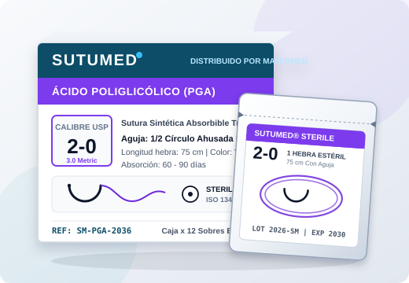

Suministramos a clínicas, hospitales y especialistas quirúrgicos toda la gama de suturas absorbibles y no absorbibles SUTUMED: agujas de acero quirúrgico serie 300 afiladas por láser, hebras con memoria controlada y empaque estéril garantizado.

Filtra dinámicamente por tipo de absorción, estructura de la hebra, calibre USP o geometría de aguja.
Selecciona un componente para desplegar su información técnica con animaciones jQuery.
Haz clic en cada geometría para alternar su detalle clínico mediante
.slideToggle():
Uso Clínico: Diseñada para tejidos blandos de fácil penetración como peritoneo, fascia muscular, tracto gastrointestinal, útero y vasos sanguíneos. Separa las fibras tisulares sin cortarlas, reduciendo el trauma quirúrgico.
Selecciona un calibre USP para visualizar el diámetro real relativo de la hebra y su recomendación clínica:
Indicación Quirúrgica: El calibre más versátil: piel general, tejido celular subcutáneo y cirugía gastrointestinal.
Validación interactiva en tiempo real con jQuery. Agrega suturas desde el catálogo o selecciónalas directamente aquí.
* Precios de referencia por caja de 12 unidades estériles. Incluye certificado de calidad por lote.
Completa los campos obligatorios (*) para habilitar el envío inmediato.
Canales oficiales de atención médica, pedidos por WhatsApp, redes sociales e información legal de la microempresa.
Especialistas en Comercialización y Distribución de Suturas Quirúrgicas SUTUMED®